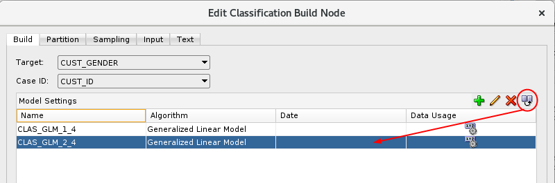
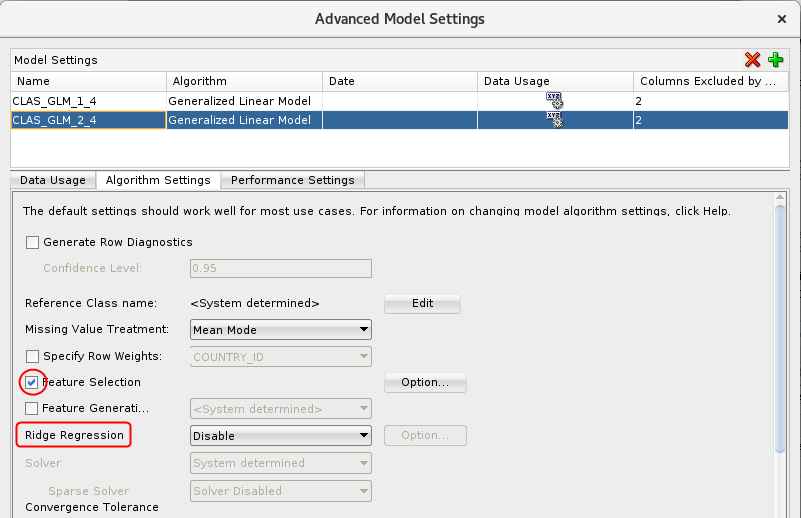
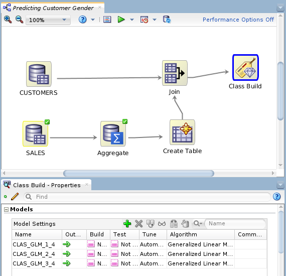
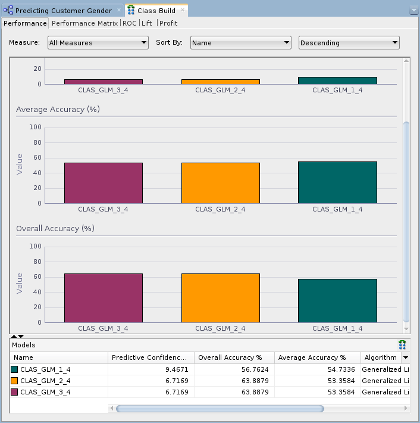
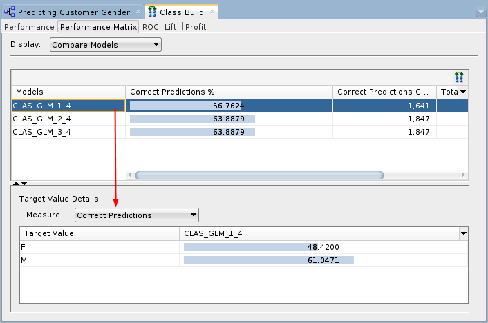
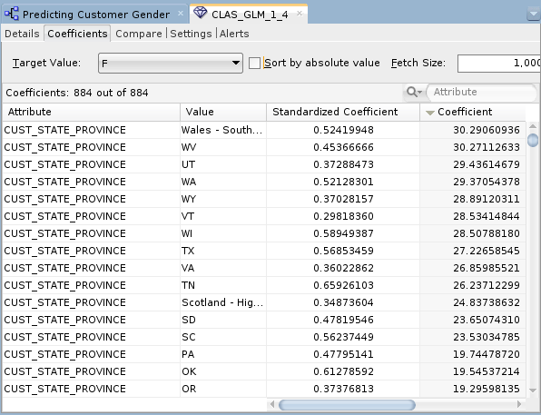
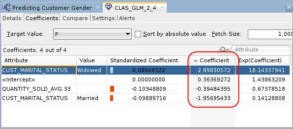

Build
and Compare Logistic Regression Classification Models
Build
and Compare Logistic Regression Classification Models  Before You Begin
Before You Begin
This 15-minute tutorial shows you how to add a classification node to your Logistic Regression Model, build the models and compare the results.
Background
Generalized Linear Models provide great transparency, which may be achieved at the expense of accuracy. With the introduction of a feature selection and generation capability, GLMs can maintain a high degree of accuracy without sacrificing transparency (the ability to explain the predictions made by the model).
- Feature Selection is the process of selecting the most meaningful attributes. With feature selection, GLMs can be created with fewer predictors, leading to smaller models and faster scoring.
- Feature Generation is the process of combining attributes into new features. With feature generation, GLMs use non-linear terms (up to cubic terms), leading to more powerful models and increased transparency.
What Do You Need?
- Oracle Database 19c Enterprise Edition
- Oracle SQL Developer version 19.x
- Oracle Data Miner User Account
- Logistic Regression Model Workflow
 Create
the Classification Models
Create
the Classification Models
In this section you will create three versions of Logistic Regression Models (GLM).
- Expand the Models category in the Components tab, and add a Classification node to the Workflow pane
- Connect the Join node to the Class Build node.
The Edit Classification Build Node window automatically appears.
- Select all of the model settings except for the Generalized Linear Model, and then click the Remove tool (red "x" icon). Select Yes in the warning message window.
- In the Build tab of the Edit Classification Build Node
window, select CUST_GENDER as the Target
attribute and CUST_ID as the Case Id.
This is a subsequent paragraph in a step.
- With the GLM model setting selected, click the Duplicate
Selected Model tool.

Description of the illustration duplicate-model.png - With the duplicated model selected (CLAS_GLM_2_4 in this example), click the Edit Advanced Model Settings tool (pencil icon).
- In the Advanced Model Settings window, select the Algorithm Settings tab. Notice that Ridge Regression is selected by default (system determined), but neither Feature Selection nor Feature Generation are enabled.
- Select the Feature Selection option
(notice that the Ridge Regression option is automatically
disabled).

Description of the illustration advanced-settings.png - Click OK to save the default Feature Selection options. Then, click OK in the Advanced Model Settings window to save the selected options without Feature Generation enabled.
- In the Edit Classification Build Node window, select the modified Generalized Linear Model model (the 2nd one) and click the Duplicate Selected Model tool.
- In the Algorithm Settings tab of the Advanced Model Settings window, click the Option button next to Feature Generation (Feature Selection is already enabled).
- Accept the system determined option for Feature Generation,
and then click OK in the Advanced Model
Settings window to save your changes. Finally, click OK
in the Edit Classification Build Node window.

Description of the illustration complete-workflow.png Note: In our example, the Properties pane is located beneath the workflow pane. With the Class Build node selected, we see all three GLM algorithms ready to be built and tested.
 Build
Models
Build
Models
In this scenario, we will compare the results of the first GLM model that uses Ridge Regression, to the other two GLM models. The second model uses Feature Selection, and the third model uses both Feature Selection and Feature Generation. We want to see which model produces the highest degree of predictive accuracy without sacrificing transparency.
- Right-click the Class Build node and select Run from the menu.
- When the green check marks appear on all of the nodes,
right-click the Class Build node and select Compare
Test Results from the menu.

Description of the illustration compare-test-results.png The model results show that the Feature Selection/Generation models produce a slightly higher degree of Predictive Confidence % and Average Accuracy % than the model that did not use the option.
- Select the Performance Matrix tab.

Description of the illustration performance-matrix.png In the upper pane, the Correct Predictions %, Correct Predictions Count, Total Case Count, and Total Cost is shown for each model. For the selected model in the upper pane, target value details are provided in the lower pane.
- Close the Class Build window.
 Compare
Models
Compare
Models
Use the View Models short-cut menu option from the Class Build node to view data about each model individually. In each case, a model window opens that contains four tabs. Examine the Coefficients tab for each model to compare the attributes that are considered significant in predicting the outcome. For all three models, look at the Target Value of F (Female).
- Right-click the Class Build node and select View Models > CLAS_GLM_1_4 (the first model, that does not use Feature Selection).
- In the Coefficients tab, perform the following:
- Select the target value F (for Female)
- Deselect the Sort by absolute value option (turn it off)
- Sort the Coefficient column, in
descending order

Description of the illustration model1-results.png This first model indicates 884 coefficients, ranked by significance, that potentially aid in determining the prediction. Recall that this model did not enable feature selection/generation, which is the determining factor in why so many coefficients were selected for this model.
- Close the model results display window.
- Right-click the Class Build node and select View Models > CLAS_GLM_2_4 (the second model, that uses Feature Selection only).
- In the Coefficients tab, use the same
criteria and sorting as with the first model.

Description of the illustration model2-results.png This model indicates only one attributes as primary determining features in the prediction: CUST_MARITAL_STATUS, with the values of "Widowed", and "Married".
- Close the model results display window.
- View the last model from the Class Build node (View
Model > CLAS_GLM_3_4).
The third model generates identical results to the second model. This means that there were no additional features generated out of the source data.
In summary, we can see in this scenario that the feature selection/generation option for GLM provided a high degree of accuracy, without sacrificing the transparency of the model.
- Close the Class Build window and Save the workflow.